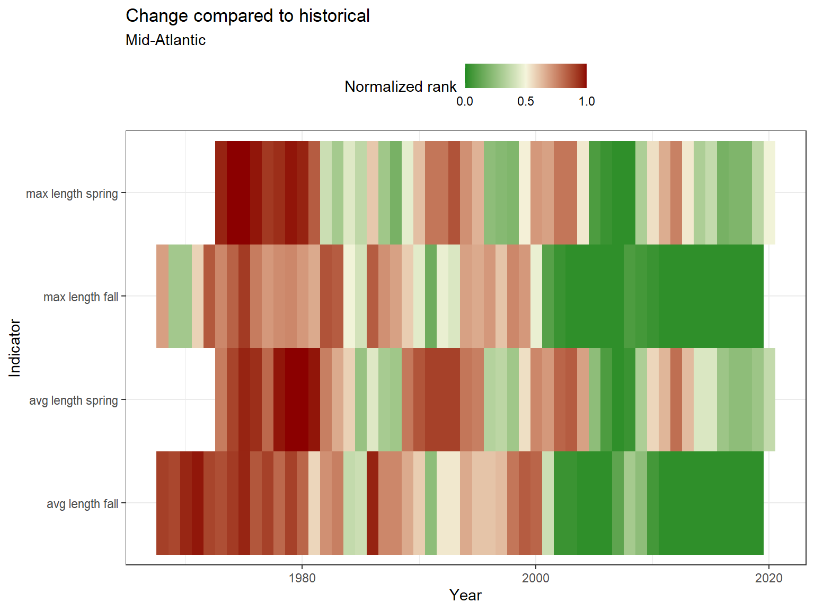
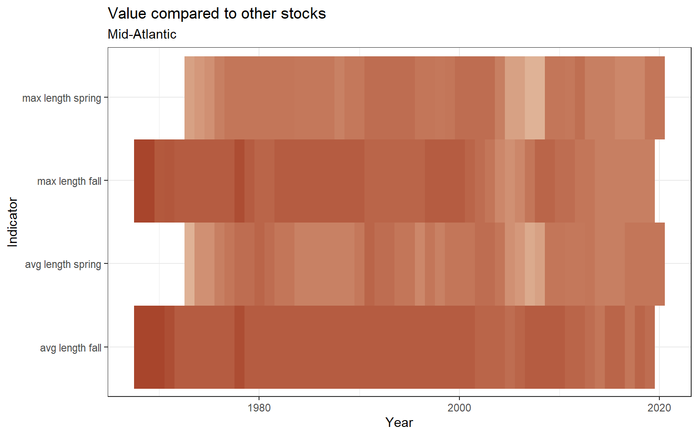

3.1 Length
Length data were pulled from survdat. Only years with more than 10 fish lengths were considered for analysis.
3.1.1 Figures
Separate geom_gls() functions were fit for the minimum, mean, and maximum lengths; trend lines are only shown when the trend was statistically significant, so some plots may have fewer than three trend lines. Please note, sometimes the survey observed a small number of fish outside of the defined stock area.
Figure 3.1: Black sea bass

Figure 3.2: Black sea bass

Figure 3.3: Black sea bass
Risk
See Methods for risk calculation details.

(#fig:risk_stock)Black sea bass

(#fig:risk_stock2-1)Black sea bass

(#fig:risk_stock2-2)Black sea bass
3.1.2 Summary
| Season | Region | Mean value +- SD (n fish, n years) | Mean value +- SD (n fish, past 5 years) | Range (total) | Range (past 5 years) |
|---|---|---|---|---|---|
| FALL | all | 14.61 +- 9.36 (29,051, 53) | 20.9 +- 8.63 (4,107, 4) | 2 - 62 | 3 - 58 |
| FALL | Outside stock area | 15.08 +- 7.86 (3,549, 27) | 9.41 +- 4.26 (1,402, 4) | 3 - 49 | 4 - 40 |
| SPRING | all | 23.6 +- 7.85 (29,360, 53) | 25.43 +- 6.56 (7,649, 5) | 2 - 64 | 4 - 62 |
| SPRING | Outside stock area | 20.51 +- 5.76 (523, 10) | 23 +- 8.24 (25, 2) | 5 - 48 | 8 - 43 |
| WINTER | all | 21.66 +- 8.09 (15,842, 16) | 22.1 +- 8.42 (6,521, 5) | 3 - 61 | 4 - 61 |
3.1.3 Data
(#fig:length_data)Black sea bass